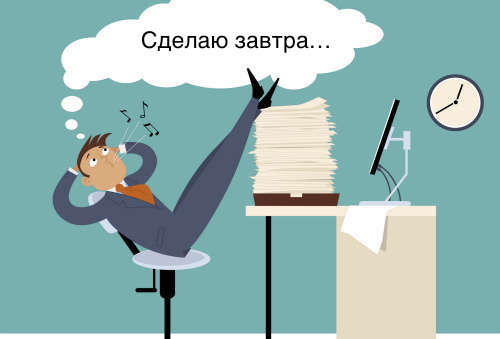

• Составление списка дел. Список дел – одна из самых распространенных ошибок в тайм-менеджменте. Вместо него следует составить список приоритетов, длиною максимум в 6-8 пунктов.
• Частая проверка электронной почты в течение дня. Проблема состоит в том, что для этого вы делаете перерыв в работе. При этом теряются обороты и концентрация. Решение состоит в выделении специальных отрезков времени на проверку почты. Старайтесь это делать в наиболее непроизводительные отрезки времени (например, после обеда, когда вы расслаблены). К тому же ограничьте лимит времени (15-20 минут), который необходим на рассылку писем.
• Отвлекающие приложения и уведомления. Всплывающие окна, мигающие иконки программ и приложения для прокрастинации – препятствия на пути к эффективной работе. Отключите все ненужные уведомления, и удалите приложения с развлекательным контентом. Если они все-таки необходимы, хотя бы удалите их из списка автозагрузки вашей ОС. Есть также и программы, которые наоборот стимулируют работать лучше и при этом восполняют недостающую мотивацию.
• Многозадачность представляет собой способность переключаться между несколькими задачами, и работать над их решением практически одновременно. При всей заманчивости многозадачности, на практике оно крайне неэффективно. Каждый раз, когда вы переключаетесь на другую задачу, теряется контроль и концентрация над задачей.Оптимальный вариант – полный отказ от такой практики. Лучше работать блоками – от 50 минут до 2 часов.
• Работа в окружении, где вас постоянно отвлекают. Частые отвлечения сводят продуктивность на нет. В такой атмосфере вы теряете нить мысли, часто сбавляете темп и тайм менеджмент перестает быть эффективным.
• Начало рабочего дня с проверки электронной почты. С утра вы полны сил и энергии, поэтому лучше потратить их на важные, стратегические задачи. Проверку почты лучше отложите на то время, когда вы устаете, и производительность падает.
• Электронные письма в папке «Входящие». Если вы сохраняете письма в этой папке, то часто можете его бессознательно перечитывать. При этом задание или проблема, которая содержится в этом письме, находит свое решение нескоро. Письма не должны быть списком ваших дел. Старайтесь «расправляться» с теми сообщениями, которые можно решить немедленно. Немедленно отвечайте, пересылайте, удаляйте или помещайте в архив все входящие письма.